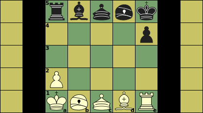

|  |
Initial setupa1, e5: King |
Click on a piece below to see its moves
|
|
||||||||
|
|||||||||
|
|
||||||||
|
|
||||||||
|
|||||||||
:
:
:
:
| Piece | ID | value | Moves (Betza notation) | Remarks |
| King | K | - | WF | |
| Rook | R | 5 | WW | Promotes tp Dragon |
| Bishop | B | 4 | FF | Promotes to Horse |
| Gold | G | 4 | WfF | |
| Silver | S | 3.5 | FfW | promotes to Gold |
| Pawn | P | 1 | fW | promotes to Gold |
| Promoted pieces (not initially present) | ||||
| Dragon | D or +R | 6 | RF | |
| Horse | H or +B | 5 | BW | |
Mini-Shogi is (not yet) a standard variant in XBoard. It has to be played in XBoard by selecting regular Shogi after having set the board- and holdings-size overrides in the New Variant dialog all to 5 (i.e. 5x5 board, and holdings for 5 piece types). This is not all, however; the pieceToCharTable has to be changed to tell XBoard that the Lance and Knight do not participate. (In regular Shogi they would, but here they would push Silver and Gold out of the holdings!) This can unfortunately only be done through command-line options.
It is therefore best to put all options needed to massage XBoard into playing this variant in a settings file mini.xop. On install .xop files are associated with XBoard, so clicking them would start XBoard with the options in that file. You could then set everything in the file needed to start in mini-Shogi mode:
-variant shogi -boardHeight 5 -boardWidth 5 -holdingsSize 5 -pieceToCharTable "P.BR.S...G.+.++.+Kp.br.s...g.+.++.+k"Since the game is just a subset of regular Shogi, legality testing can remain on. You could also specify your favorite mini-Shogi engine with -fcp in that file.
You can drop pieces by dragging them onto the board from the holdings displayed beside the board.
Of course there will always be people that prefer an oriental look, with pentagonal kanji tiles. XBoard comes with a set of kanji pieces in the 'themes/shogi' sub-directory of its data directory (e.g. /usr/local/share/games/xboard). You can select that as -pieceImageDirectory (-pid for short) from the command line, or from the View -> Board dialog. You would also have to tick 'Flip black pieces Shogi style' there (or use the option -flipBlack true) to make sure the pieces won't go upside down when you flip the view.
In stead of Queens you have Silver and Gold Generals. Pawns capture straight ahead. Captured pieces can later be dropped to augment the army of their capturer. There is no castling, Pawn double-push or e.p. capture.
Because pieces are dropped back, there will not be a traditional end-game. Trading material does not constitute progress towards winning, even when you are ahead.
Because Gold Generals obtained through promotion revert to their original form on capture, they are really different piece types from the primordial Golds that move the same. In notation they are therefore not indicated as 'G', but as the ID of the original piece prefixed with a '+'. Especially the promoted Pawn (aka Tokin) is more valuable: it is much better to lose a Gold that gives the opponent a Pawn in hand, than to lose a Gold that gives him a Gold in hand.
It is a big advantage to have a General on the central square.
Pieces in hand are in general worth more than on the board, as they are much more mobile. And you can drop them in the promotion for an easy promotion on the next turn. But pieces in hand cannot capture anything, and don't guard your promotion zone.